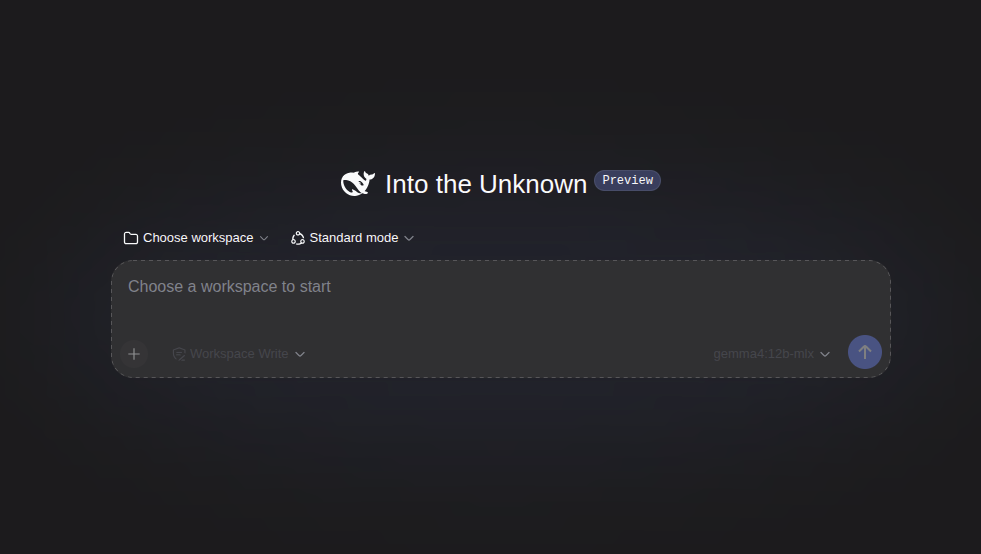

DeepSeek Harness: the first Web UI agent
Every agent VibePod shipped so far was a terminal program. The DeepSeek
Harness is not: vp run dsh starts the harness's browser UI inside
the container and prints its URL — by default
http://127.0.0.1:3080, published loopback-only on the host. The
terminal stays attached to the container logs, and Ctrl+C stops it.

vp run dsh.vp run dsh
vp ds
vp run deepseek # aliasSessions, profiles, plugins, and credentials persist in
~/.config/vibepod/agents/dsh/, which is mounted as the container's
home. On first run, pick /workspace — the project mount — as the
workspace in the Web UI, then configure a model under
Settings → Models. Both choices survive restarts.
No DeepSeek account is required: enter a DeepSeek API key in the Web UI (or
pass -e DEEPSEEK_API_KEY=$DEEPSEEK_API_KEY from the host), or point
the openai provider at any OpenAI-compatible endpoint, including a
local Ollama server. For a one-shot answer without the server, the harness's
headless profile runs through vp task:
vp task create dsh "summarize this repository"The harness is a developer preview upstream and warns of
compatibility-breaking changes, so the vibepod/dsh image pins an
exact harness version and the CLI prints a preview notice on every run.
Per-profile proxy filters
The built-in proxy already logged every outbound request. Now it can also decide which ones go through, and the decision belongs to the credential profile — a work profile can be locked to a short allow list while a personal profile stays open:
vp proxy filter show
vp proxy filter allow api.anthropic.com --profile work
vp proxy filter deny example.com --profile work
vp proxy filter clear --profile workFilters are materialized into proxy policies when vp run or
vp task starts, applied to containers that are already running, and
cleaned up when they are stale. An invalid filter fails closed: the run stops
instead of quietly letting everything through, and blocked requests are recorded
with their reason so the dashboard can show what was refused.
Publish a port for one session
Port publishing used to require a config entry. -p/--publish
adds a one-off mapping for a single run — handy for a dev server you only want
reachable while you are working:
vp run claude -p 127.0.0.1:5173:5173An explicit --publish replaces the configured ports for that
run, so the config's port validation is skipped rather than fought with.
Smaller changes
vp config path now prints the config directory and the proxy
database next to the config file. After an agent exits, VibePod prints the
vibepod resume command needed to pick the session back up (matching
Pi's --session form). Project overlay images are named per project,
so two projects no longer share one overlay build. And agent containers map
host.docker.internal, which is what local model servers on the host
are reached through.
Release details
- Added the DeepSeek Harness (
dsh, aliasesdeepseek/deepseek-harness, shortcutvp ds, imagevibepod/dsh:latest, overrideVP_IMAGE_DSH) with a loopback-only Web UI port, a headlessvp taskpath, and a preview warning. - Added
vp proxy filter(show,allow,deny,clear) with per-profile settings, materialization onrun/taskstartup, live application to running containers, stale-policy cleanup, and fail-closed validation. - Added
-p/--publishtovp runfor one-off port publishing; config port validation is skipped when it replaces the configured ports. vp config pathshows the config directory and the proxy database.- Prints the
vibepod resumecommand after an agent exits. - Overlay images are named per project.
- Maps
host.docker.internalin agent containers. - Documented the Homebrew and conda-forge install channels, overlay recipes, and dsh setup.
- Added the
ruamel.yamldependency and bumped the package version to0.21.0.